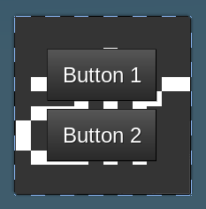

Flow Unofficial Documentation
Flow is an experimental layout manager and formspec API replacement for Luanti (formerly Minetest). Describe your menu, and flow handles the rest. Vaguely inspired by Flutter and GTK.
Luanti's built-in menu format (inventories, chests, dialogs, ...) is formspec, consisting of one long string of buttons, text fields, and inventory slots. With formspec, you have to manually place every element by position and size, consult official docs in case of the many gotchas, and there's no reasonable way to write an LSP for it.
Flow lets you describe the same menu with plain Lua tables, positions and sizes everything for you, and generates the formspec behind the scenes. You never have to write one. And if you like using modern IDE features, you will now actually have direct access to definitions from the editor (LuaCATS annotations are included).
Features
Layouting
- Automatic placement. Flow works out every position, so there's no arithmetic to redo when you add one button.
- Comprehensive layout elements. Nest
HBoxandVBoxcontainers and they line up on their own. Scrolling, paging, stacking, wrapping, and flexible spacing are covered too. And yes, also manual placement usingContainer. - Automatic sizing. Labels, checkboxes, buttons, text fields, password fields, text areas, drop-downs, text lists, and vertical labels size themselves. See Sizes.
- Room to grow. Set
expand = trueand an element fills any spare space. - Translation-friendly. Elements sized from their label grow or shrink to fit longer text1.
Other features
- No form names. They still exist internally, but you never have to deal with them.
- No state bookkeeping. Flow remembers the values of fields, scrollbars, checkboxes, and the like across redraws, and reapplies them for you.
- Built-in debugging. The inspector mod helps you develop and debug forms.
- Safer input handling. Flow mitigates some common formspec input security issues. See Security.
Limitations
- This mod doesn't support all of the features that regular formspecs do. See Unsupported Features for a list.
Security
Flow ignores potentially malicious formspec input from clients, such as buttons or fields that haven't been shown to the client, out-of-bounds dropdown selections, and newlines in Field elements (where it's impossible to enter a newline without pasting it in). See Security for the full list of what flow checks and what you still need to check yourself.
Other Documentation
The official documentation is available at https://luk3yx.gitlab.io/minetest-flow/. Some code snippets have a "run" button which will open them in a web-based playground, not all of these will work properly as the playground doesn't support all formspec elements.
-
This is an estimate, not a measurement. The real size of a label depends on the client's font, DPI, window size, and formspec scaling settings, and Luanti gives mods no way to measure text. Flow assumes 0.21 slots per character (UTF-8 characters, not bytes, counting the longest line) and 0.4 slots per line of height, scaled by any
*1.5-stylefont_sizestyle. It ignores the font. If the estimate is off for your text, setw,h, ormin_wyourself. ↩
Getting started
A form is a menu that is shown to a player. It is made of elements (also called widgets), such as labels, buttons, text fields, and inventory slots, which are arranged by layout elements like gui.VBox. You describe a form with a build function, which is the function you pass to flow.make_gui(). It returns the elements, and flow works out the positions and sizes and shows the form for you. This documentation always calls it the build function. See Elements for what each element does.
Basic example
See example.lua in the flow repository for a more comprehensive example which demonstrates how layouting and alignment works. In singleplayer, a player with the server privilege can also run /flow-example to open it in the game.
The build function is called with the player and a context table (ctx) every time the form is drawn. ctx belongs to one player's copy of the form: flow keeps the same table for as long as the form is open, passes it to the build function and to every on_event function, and you can store anything in it. Flow adds a ctx.form table to it, which holds the current values of the form's named inputs (see Names and values).
form:show(player, ctx) shows the form to a player. The second argument is the starting ctx. Flow uses that table itself instead of a copy, and uses a new empty table if you leave it out.
The example below uses a player called playground, which only exists in the online playground. In a mod, use a real player object instead, such as the one passed to a chat command or to core.register_on_joinplayer.
local gui = flow.widgets -- local recommended for direct referencing
local STARTING_SELECTION = 3 -- change and rerun to see the difference
local function build_vbox(player_obj, ctx)
return gui.VBox {
gui.Label { label = "Here is a dropdown:" },
gui.Dropdown {
name = "cool_dropdown",
items = { 'First item', 'Second item', 'Third item' },
index_event = true,
selected_idx = ctx.value or 1
},
gui.Button {
label = "Get dropdown index",
on_event = function(player, ctx)
local idx = ctx.form.cool_dropdown or ctx.value or 1
core.chat_send_player(player:get_player_name(),
("You have selected item #%d!"):format(idx))
end,
}
}
end
local form = flow.make_gui(build_vbox)
-- Use a real player in your mod, "playground" only exists in the playground
local player_obj = core.get_player_by_name("playground")
form:show(player_obj, { value = STARTING_SELECTION }) -- Starting ctx, optional
Updating forms
If some data displayed inside a form changes (for example a timer or progress indicator), you can use my_gui:update(player) or my_gui:update_where(func) (see below) to update the form without resetting ctx or showing the form again if the player has closed it.
Luanti has no way to change a form that is already open, so flow has to show the whole form again. Because of this, players may lose text typed into fields that hasn't been sent to the server (which happens when they press a button or Enter) when the form is updated.
-- Re-shows the form for one player if they have the form open
my_gui:update(player)
-- Re-shows the form for all players that have the form open and where
-- ctx.test == 123
my_gui:update_where(function(player, ctx)
return ctx.test == 123
end)
-- Re-shows the form for all players with the "server" privilege
my_gui:update_where(function(player, ctx)
return core.check_player_privs(player, "server")
end)
-- Re-shows the form for all players with the form open
my_gui:update_where(function() return true end)
Inside an on_event handler, you can use return true instead.
gui.Button {
label = "Update form",
on_event = function(player, ctx)
return true
end,
}
If you're using a form as a HUD, you must call my_gui:show_hud(player) to update it. See HUDs for how to show and close one.
Redrawing when a value changes
You often do not need return true. If your build function reads the value of a named input from ctx.form, flow notices and redraws the form by itself whenever the player changes that value.
local form = flow.make_gui(function(player, ctx)
return gui.VBox {
gui.Checkbox { name = "advanced", label = "Show advanced options" },
-- Reading ctx.form.advanced here makes flow redraw the form
-- whenever the checkbox changes.
ctx.form.advanced and gui.Label { label = "Advanced options" }
or gui.Nil {},
}
end)
The rules are:
- Only reads while the build function runs count, including reads in helper functions that it calls. Reading
ctx.forminside anon_eventfunction does not. - The form is only redrawn if the value is different from the stored one.
- If the element has its own
on_eventfunction, there is no automatic redraw. That function has toreturn trueinstead. - Text fields only send their text when the player presses a button or Enter (see Names and values), so the redraw happens then.
Elements/widgets
Layouting elements
You should do local gui = flow.widgets in your code to improve readability. All examples will assume that this line exists.
These elements control how other elements are arranged. Most of them draw nothing themselves: they place the elements inside them, work out how big everything is, and share out any spare space. Elements that draw something or accept input (labels, buttons, fields, ...) are described in Elements. To place elements at exact coordinates instead, see Manual positioning.
Warning: gui.VBox, gui.HBox, and gui.Stack do not support w and h properties and will break in weird ways if you try and use them. Use min_w and min_h instead.
The layouting elements that do take w and h are gui.ScrollableVBox and gui.PaginatedVBox (both are optional), and gui.Spacer. gui.Flow needs a w but does not support h, see Experimental.
gui.VBox
A vertical box, similar to a VBox in GTK. Elements inside a VBox are stacked vertically.
gui.VBox {
-- These elements are documented later on.
gui.Label { label = "I am a label!" },
-- The second label will be positioned underneath the first one.
gui.Label { label = "I am a second label!" },
}
Elements inside boxes have a spacing of 0.2 between them. To change this, you can add spacing = <number> to the box definition. For example, spacing = 0 will remove all spacing between the elements. gui.HBox and gui.Flow have the same spacing parameter and default. Spacing is the gap between the elements of a box, while padding is the space around a single element.
gui.HBox
Like gui.VBox but stacks elements horizontally instead.
gui.HBox {
-- These elements are documented later on.
gui.Label { label = "I am a label!" },
-- The second label will be positioned to the right of first one.
gui.Label { label = "I am a second label!" },
-- You can nest HBox and VBox elements
gui.VBox {
gui.Image { w = 1, h = 1, texture_name = "default_dirt.png", align_h = "center" },
gui.Label { label = "Dirt", expand = true, align_h = "center" },
}
}
gui.ScrollableVBox
Similar to gui.VBox, but shows its contents in an area of a fixed size that the player can scroll, and automatically adds a scrollbar next to it. Anything outside the area is hidden until it is scrolled into view. The area is w by h, both are optional: the width defaults to the width of the contents and the height defaults to the height of the contents, up to a maximum of 5.
On clients too old to support scrolling areas (before Luanti 5.4), flow shows one page of the contents at a time instead, with < and > buttons to change page.
To change how the scrollbar looks, set custom_scrollbar to a table of parameters for gui.Scrollbar, for example custom_scrollbar = {w = 0.8} to make it wider.
gui.ScrollableVBox {
-- A name must be provided for ScrollableVBox elements. You don't
-- have to use this name anywhere else, it just makes sure flow
-- doesn't mix up scrollbar states if one gets removed or if the
-- order changes.
name = "vbox1",
-- Specifying a height is optional but is probably a good idea.
-- If you don't specify a height, it will default to
-- min(height_of_content, 5).
h = 10,
-- These elements are documented later on.
gui.Label { label = "I am a label!" },
-- The second label will be positioned underneath the first one.
gui.Label { label = "I am a second label!" },
}
gui.Spacer
A "flexible space" element that expands by default. Example usage:
gui.HBox {
-- These buttons will be on the left-hand side of the screen
gui.Button { label = "Cancel" },
gui.Button { label = "< Back" },
gui.Spacer {},
-- These buttons will be on the right-hand side of the screen
gui.Button { label = "Next >" },
gui.Button { label = "Confirm" },
}
Prefer expand = true with align_h or align_v when that gives the same result. Spacers are implemented as hidden containers and do not handle some special cases.
You can replicate the above example without spacers, however the code doesn't look as clean:
gui.HBox {
-- These buttons will be on the left-hand side of the screen
gui.Button { label = "Cancel" },
gui.Button { label = "< Back", expand = true, align_h = "left" },
-- These buttons will be on the right-hand side of the screen
gui.Button { label = "Next >" },
gui.Button { label = "Confirm" },
}
You should not use spacers to center elements as it creates unnecessary boxes, and labels may be slightly off-center (because label widths depend on screen size, DPI, etc and this code doesn't trigger the centering hack):
-- This is bad!
gui.HBox {
gui.Spacer {},
gui.Label { label = "I am not properly centered!" },
gui.Spacer {},
}
You should do this instead:
gui.Label { label = "I am centered!", align_h = "center" },
This applies to other elements as well, because using HBox and Spacer to center elements creates unnecessary containers.
gui.Nil
A tool to allow for ternary-ish conditional widgets. Unlike an element with visible = false (see Hiding elements), which keeps its space, a gui.Nil takes up no space:
local form = flow.make_gui(function(player, ctx)
local the_boolean = false
return gui.VBox {
gui.Label { label = "The box below is only present if the boolean is truthy" },
the_boolean and gui.Box { w = 1, h = 1, color = "#FF0000" } or gui.Nil {},
}
end)
Use sparingly, flow still has to process each Nil object to be able to know to remove it, and thus could still slow things down. The fastest element is one that doesn't exist, and thus doesn't need processing.
gui.Stack
This container element places its children on top of each other. All child elements are expanded in both directions.
Note that some elements (such as centred labels) won't pass clicks through to the element below them.
Example
gui.Stack {
min_w = 10,
gui.Button { label = "Hello world!" },
gui.Image { w = 1, h = 1, texture_name = "air.png", padding = 0.2, align_h = "left" },
}

gui.PaginatedVBox
Like gui.ScrollableVBox, but splits the contents into pages instead of scrolling. Only one page is shown at a time, with a < button, a "Page 1 of 3" label, and a > button underneath to change page. It needs a unique name, and w and h work the same way as for gui.ScrollableVBox. Elements are never cut in half: an element that does not fit on a page starts the next one.
gui.ScrollableVBox uses this automatically on clients that cannot scroll.
gui.Flow
A container with a fixed width that wraps its children onto new rows when they do not fit. You must give it a w, and it does not support h, min_w, or padding. Use spacing to change the gap between elements (the default is the same as for gui.VBox). See Experimental features for details and an example.
gui.Padding (deprecated)
Wraps a single element to add padding around it. It is deprecated and logs a warning, use the padding parameter of the element itself instead, see Padding.
Elements
This page describes the elements (widgets) that draw something or accept input. Elements that only arrange other elements (gui.VBox, gui.HBox, gui.Stack, ...) are described in Layouting elements.
Every element is a function in flow.widgets that takes a table of parameters:
local gui = flow.widgets
gui.Label { label = "Hello world!" }
The parameter lists below are generated by generate_docs.py (in the root of this documentation repository) from the formspec_ast element definitions. The descriptions and comments are written by hand in that script. Edit the script instead of this page: running it overwrites this file, including any hand edits to the text or spacing.
The values in the examples are placeholders that show what type a parameter takes. Replace them with your own. Parameters marked -- Optional can be left out.
Concepts used on this page
Sizes
Sizes are measured in inventory slots: 1 is the width and height of one item slot. There is no hidden padding or spacing, so two boxes that are 1 wide and placed next to each other with spacing = 0 touch. You never give an element a position, boxes place their children and flow works out the total size of the form.
Elements that show text, such as labels, buttons, and fields, are sized to fit their text unless you give them a w and h. Elements that show something without a natural size, such as images, boxes, models, and tables, need an explicit w and h (their parameter lists below do not say -- Optional). Flow can only estimate the width of text because the real width depends on the player's font, screen size, and scaling settings, so avoid layouts that rely on exact text widths (see the note on label sizes).
Names and values
Many elements take a name. Input elements (fields, checkboxes, dropdowns, lists of text, tables, ...) with a name have their current value stored in ctx.form[name] and flow remembers it when the form is redrawn:
| Element | Value in ctx.form[name] |
|---|---|
gui.Field, gui.Pwdfield, gui.Textarea |
Text (string) |
gui.Checkbox |
true or false |
gui.Dropdown |
Text of the selected item, or its number if index_event = true |
gui.Textlist, gui.Table |
Number of the selected row (first row is 1) |
gui.Tabheader |
Number of the selected tab (first tab is 1) |
gui.Scrollbar |
Position of the slider (number) |
gui.Hypertext |
"action:" and the name of the last clicked <action> link |
Until the player changes something, the value is the element's initial value (default, selected, selected_idx, value, current_tab). If you did not give one, it is "" for text, false for checkboxes, 1 for tables, text lists, and dropdowns with index_event = true, the text of the first item for other dropdowns, and 0 for scrollbars. gui.Hypertext has no starting value, and neither has gui.Tabheader without a current_tab, so ctx.form[name] is nil until the player clicks a link or a tab. Text fields only send their text to the server when the player presses a button or Enter, so ctx.form can be out of date until then.
If your build function reads ctx.form.some_name, flow redraws the form automatically whenever the player changes that value (unless the element has its own on_event), see Redrawing when a value changes. Buttons do not store a value.
Events
Elements that the player can use accept an on_event function, which is called with the player and ctx. Return true from it to redraw the form. A name is optional if you use on_event, flow makes one up.
Colors
Colors are strings. "#RGB" and "#RRGGBB" are fully opaque, while "#RGBA" and "#RRGGBBAA" end with an alpha value, where 00 is fully transparent and FF is fully opaque. Color names also work (all the names from CSS, such as "red" and "darkgreen"), and you can add an alpha value after a #, for example "darkgreen#08".
Most text can also be coloured by putting color escape sequences in it, such as the ones made by core.colorize(). Dropdown items and tab captions are an exception, they cannot be coloured.
Textures and items
A texture name is the file name of an image from the textures folder of any loaded mod, such as "default_dirt.png". An item name is the registered name of an item or node, such as "unifieddyes:colorium".
Parameters shared by all elements
Every element, including layouting elements, accepts these parameters in addition to its own:
| Parameter | Description |
|---|---|
padding |
Space around the element, see Padding. |
visible |
Set to false to hide the element but keep its space, see Hiding elements. |
expand |
Set to true to make the element grow to fill spare space in the gui.HBox or gui.VBox it is in. If several elements expand, they share the spare space equally. |
align_h, align_v |
Where the element goes when there is more room than it needs: "start", "end", "center", "fill" (stretch), or "auto" (the default, flow picks one). "left" and "top" mean "start", "right" and "bottom" mean "end", and "center" means "center". |
min_w, min_h |
The smallest size of the element, for elements that size themselves. |
tooltip |
Text to show when the player hovers over the element, see Tooltips. |
style |
Inline styles, see Styling. |
on_event |
A function to call when the player uses the element, see Events above. |
Nine-slice images
Images and image-like backgrounds can optionally be drawn as a "nine-slice". The picture is cut into a 3x3 grid, where the corners keep their size, the edges are stretched in one direction, and the middle is stretched in both. This lets one small texture make a panel or border of any size without distorting its corners. The middle_* parameters describe where the cuts are, in texture pixels (whole numbers):
middle_xonly: the cuts aremiddle_xpixels from every side.middle_xandmiddle_y:middle_xpixels from the left and right sides andmiddle_ypixels from the top and bottom.- All four: the middle rectangle starts at
middle_x, middle_yand ends atmiddle_x2, middle_y2. Negativemiddle_x2andmiddle_y2values are measured from the far (right/bottom) edge of the texture.
Elements
gui.AnimatedImage
Shows an image that plays an animation. The texture must contain every frame stacked on top of each other (the first frame at the top), with all frames the same size. w and h are the size of one displayed frame.
middle_* parameters turn on nine-slice drawing, see Nine-slice images.
Example
gui.AnimatedImage {
w = 1,
h = 2,
-- Only useful for styling.
name = "my_animated_image", -- Optional
-- Texture that contains all frames.
texture_name = "texture.png",
-- Number of frames in the texture.
frame_count = 3,
-- Milliseconds each frame is shown for. 0 means no animation.
frame_duration = 100,
-- Frame to start on, the first frame is 1. Default 1.
frame_start = 5, -- Optional
middle_x = 6, -- Optional
middle_y = 7, -- Optional
middle_x2 = 8, -- Optional
middle_y2 = 9, -- Optional
}
gui.Background
Draws a picture behind everything else in the form: all backgrounds are drawn before any other element, whatever order they are in. The picture (texture_name) is stretched to w by h. If auto_clip is true, it is cut off at the edge of the form instead and w and h are ignored.
You usually do not need this element, set bgimg on a container or the root element instead (see Padding). Inside a gui.Stack, a gui.ScrollableVBox, or an embedded form, flow draws backgrounds without auto_clip as ordinary images.
Example
gui.Background {
w = 1,
h = 2,
-- Picture to draw.
texture_name = "texture.png",
-- Cut off at the form edge, ignore w and h.
auto_clip = false, -- Optional
}
gui.Background9
Like gui.Background, but the picture is drawn as a nine-slice so that it can be stretched to any size without distorting its corners.
Example
gui.Background9 {
w = 1,
h = 2,
-- Picture to draw.
texture_name = "texture.png",
-- Cut off at the form edge, ignore w and h.
auto_clip = false,
-- Nine-slice cut, see "Nine-slice images".
middle_x = 3,
middle_y = 4, -- Optional
middle_x2 = 5, -- Optional
middle_y2 = 6, -- Optional
}
gui.Bgcolor
Sets the colors behind the form. This does the same thing as the bgcolor, fbgcolor, and bg_fullscreen options of the root element, which are explained in Experimental features and are easier to use. fullscreen can be false, true, "both", or "neither".
Example
gui.Bgcolor {
-- Background color of the form.
bgcolor = "#FF0000",
-- false, true, "both", or "neither".
fullscreen = false, -- Optional
-- Color of the area behind the form.
fbgcolor = "#FF0000", -- Optional
}
gui.Box
Draws a solid rectangle of one color. Boxes have no natural size, so give them a w and h.
Unlike everywhere else, a hexadecimal color without an alpha value ("#RGB" or "#RRGGBB") is drawn with an alpha of 8C (140 out of 255, about 55% opaque) here. Add the alpha value ("#FF0000FF") to make it opaque. Color names such as "red" are not affected and are opaque unless you add an alpha value ("red#80"). Flow also draws the bgcolor of gui.HBox, gui.VBox, and other containers with a box, so the same applies to it.
Example
gui.Box {
w = 1,
h = 2,
-- Fill color.
color = "#FF0000",
}
gui.Button
A clickable button showing label. Your on_event function is called when it is clicked. If you do not set w and h, the button is sized to fit the label (but never smaller than 1.6 by 0.8).
Buttons do not store a value in ctx.form.
Example
gui.Button {
w = 6, -- Optional
h = 2, -- Optional
name = "my_button", -- Optional
label = "Hello world!", -- Optional
}
gui.ButtonExit
A button that closes the form when it is clicked. Your on_event function is still called before the form closes. In all other respects it works like gui.Button.
Example
gui.ButtonExit {
w = 6, -- Optional
h = 2, -- Optional
name = "my_button_exit", -- Optional
label = "Hello world!", -- Optional
}
gui.ButtonURL
A button that, when clicked, offers the player the choice of opening url in their web browser. url must start with http:// or https://. Your on_event function is also called. In all other respects it works like gui.Button.
Example
gui.ButtonURL {
w = 6, -- Optional
h = 2, -- Optional
name = "my_button_url", -- Optional
label = "Hello world!", -- Optional
-- Web address to offer to open.
url = "https://example.com",
}
gui.ButtonUrlExit
Like gui.ButtonURL, but the form also closes when the button is clicked.
Example
gui.ButtonUrlExit {
w = 6, -- Optional
h = 2, -- Optional
name = "my_button_url_exit", -- Optional
label = "Hello world!", -- Optional
-- Web address to offer to open.
url = "https://example.com",
}
gui.Checkbox
A tick box with a text label. selected sets whether it starts ticked. If you give it a name, ctx.form[name] is true or false and is updated as soon as the player ticks or unticks it.
Checkboxes are sized automatically and do not accept w or h.
Example
gui.Checkbox {
name = "my_checkbox", -- Optional
label = "Hello world!", -- Optional
selected = false, -- Optional
}
gui.Container
A group of elements that you position yourself with x and y instead of letting flow lay them out. See Manual positioning.
Example
gui.Container {
w = 6, h = 2, -- Optional
{ type = "box", x = 0, y = 0, w = 1, h = 1, color = "red" },
{ type = "label", x = 1, y = 1.5, label = "Hello world!" },
}
gui.Dropdown
A drop-down list that shows the currently selected item and lets the player pick another one from items (a list of strings). selected_idx is the number of the item that is selected at first (the first item is 1).
ctx.form[name] is the text of the selected item. If index_event = true it is the number of the selected item instead, which is easier to work with when two items have the same text or when the text is translated.
If you do not set w and h, the dropdown is sized to fit its longest item (but never smaller than 2 by 0.8). Item text cannot be coloured.
Example
gui.Dropdown {
w = 2, -- Optional
h = 2, -- Optional
name = "my_dropdown", -- Optional
-- List of choices.
items = { "Hello world!", ... },
-- Number of the item selected at first.
selected_idx = 3, -- Optional
-- Store the item number in ctx.form instead of its text.
index_event = false, -- Optional
}
gui.Field
A single-line text box. label, if set, is shown above the box (flow leaves room for it automatically). default is the text it starts with.
ctx.form[name] is the text in the box. Newlines and other control characters are removed from it (a player can only get them into a field by pasting). The text is sent to the server when the player presses a button or Enter. To react to Enter, see Handling enter keypresses in fields.
If you do not set w and h, the field is sized to fit its default text and label (but never smaller than 3 by 0.8).
Example
gui.Field {
w = 6, -- Optional
h = 2, -- Optional
name = "my_field", -- Optional
label = "Hello world!", -- Optional
-- Text the field starts with.
default = "Hello world!", -- Optional
-- Called when the player presses Enter.
on_key_enter = function(player, ctx) end, -- Optional
-- Close the form on Enter. Default false.
close_on_enter = false, -- Optional
-- Make "Done" on the mobile on-screen keyboard act like Enter.
enter_after_edit = false, -- Optional
}
gui.FieldCloseOnEnter
Sets whether pressing Enter in the field with this name closes the form. You normally do not need this element, as gui.Field has a close_on_enter parameter (and by default Enter does not close the form).
Example
gui.FieldCloseOnEnter {
-- Name of the field.
name = "my_field_close_on_enter",
close_on_enter = false,
}
gui.FieldEnterAfterEdit
Experimental, and only affects Android. If enter_after_edit is true, pressing "Done" in the text input dialog of the field with this name counts as pressing Enter. You normally do not need this element, as gui.Field has an enter_after_edit parameter.
Example
gui.FieldEnterAfterEdit {
-- Name of the field.
name = "my_field_enter_after_edit",
enter_after_edit = false,
}
gui.Hypertext
Shows text that can be formatted (bold, colors, different sizes, images, ...) and can contain clickable links. The text is written in a small HTML-like language, which is described in Hypertext markup. w and h are the size of the area that the text is wrapped to fit in.
If the markup contains <action name=...> links, ctx.form[name] is set to "action:" followed by the action name when the player clicks one. This behaviour is experimental and may change.
Example
gui.Hypertext {
w = 6,
h = 2,
-- Receives the clicked action, see above.
name = "my_hypertext", -- Optional
-- Formatted text, see "Hypertext markup".
text = "Hello world!",
}
gui.Image
Shows a picture, stretched to fit w by h. If you want to use one small texture for pictures of many sizes, use the middle_* parameters, see Nine-slice images.
Example
gui.Image {
w = 4,
h = 2,
-- Texture to draw.
texture_name = "texture.png",
middle_x = 3, -- Optional
middle_y = 4, -- Optional
middle_x2 = 5, -- Optional
middle_y2 = 6, -- Optional
}
gui.ImageButton
A button that is drawn as a picture instead of the usual button face. The picture (texture_name) is stretched to w by h, and label is drawn on top of it. It works like gui.Button otherwise.
noclip: Allow the button to be drawn outside the form's area.drawborder: Draw the normal button border around the picture.pressed_texture_name: Picture to show while the button is held down.
Example
gui.ImageButton {
w = 6,
h = 2,
-- Picture to draw as the button.
texture_name = "texture.png",
name = "my_image_button", -- Optional
label = "Hello world!", -- Optional
noclip = false, -- Optional
drawborder = false, -- Optional
pressed_texture_name = "texture.png", -- Optional
}
gui.ImageButtonExit
Like gui.ImageButton, but the form also closes when the button is clicked.
Example
gui.ImageButtonExit {
w = 6,
h = 2,
-- Picture to draw as the button.
texture_name = "texture.png",
name = "my_image_button_exit", -- Optional
label = "Hello world!", -- Optional
noclip = false, -- Optional
drawborder = false, -- Optional
pressed_texture_name = "texture.png", -- Optional
}
gui.ItemImage
Shows the picture that is used for an item or node in inventories (item_name, such as "unifieddyes:colorium"), stretched to fit w by h.
Example
gui.ItemImage {
w = 2,
h = 3,
-- Registered item or node name.
item_name = "unifieddyes:colorium",
}
gui.ItemImageButton
A button that shows the inventory picture of an item or node (item_name). By default, the item's description is shown as a tooltip when the player hovers over the button, which you can replace with the tooltip parameter. It works like gui.Button otherwise.
Give every item image button its own unique name, otherwise its tooltip may not work.
Example
gui.ItemImageButton {
w = 1,
h = 2,
-- Registered item or node name.
item_name = "unifieddyes:colorium",
name = "my_item_image_button", -- Optional
label = "Hello world!", -- Optional
}
gui.Label
Shows text. Labels do not wrap long lines automatically: use \n to start a new line and do not use labels for long paragraphs. For those, use gui.Hypertext, or a gui.Textarea without a name (which wraps its text and gets a scrollbar if the text is too long).
Labels are sized to fit their text, and flow ignores color escape sequences when it estimates the width. To make the text bigger or smaller, use the font_size style (for example style = {font_size = "*2"}), see Styling.
Example
gui.Label {
label = "Hello world!",
}
gui.List
Shows a grid of inventory slots, with the items of one inventory list in it. This is how you show the player's inventory, a chest, a furnace's input slots, and so on.
inventory_location: Which inventory to show. Common values are"current_player"(the inventory of the player who has the form open),"nodemeta:X,Y,Z"(the inventory of the node at that position, for example"nodemeta:10,5,-3"), and"detached:name"(a detached inventory)."player:name"is the inventory of a specific player and is only ever sent to that player.list_name: The name of the list inside that inventory, such as"main"or"craft".wandh: How many slots wide and high to draw (whole numbers).
Slots are filled from left to right, then top to bottom, and the player can move items in and out of them. The list is only shown if the inventory has been sent to the player's client. Only as many slots as the inventory list has are drawn, even if w times h is larger.
Each slot is 1 by 1, with 0.25 between slots, so a list that is 8 slots wide and 4 high is 9.75 by 4.75 big. To change the slot size or spacing, use the size and spacing styles, see Styling.
Example
gui.List {
-- Which inventory to show.
inventory_location = "current_player",
-- Which list in that inventory to show.
list_name = "main",
w = 1,
h = 2,
-- Index of the first slot to draw. Unlike most numbers here, this starts
-- at 0. Default 0.
starting_item_index = 3, -- Optional
}
gui.Listcolors
Sets the colors of inventory slots. It is invisible, takes up no space, and should come before the gui.List elements it is for.
slot_bg_normal: Background color of a slot.slot_bg_hover: Background color of a slot while the mouse is over it.slot_border: Color of the border of the slots.tooltip_bgcolor: Default background color of item tooltips.tooltip_fontcolor: Default text color of item tooltips.
Only the first two are required. To use pictures instead of colors for slots, see Unsupported Features.
Example
gui.Listcolors {
-- Slot background color.
slot_bg_normal = "#FF0000",
-- Slot background color when hovered.
slot_bg_hover = "#FF0000",
-- Slot border color.
slot_border = "#FF0000", -- Optional
-- Default tooltip background color.
tooltip_bgcolor = "#FF0000", -- Optional
-- Default tooltip text color.
tooltip_fontcolor = "#FF0000", -- Optional
}
gui.Listring
Sets where items go when the player shift-clicks them. Every gui.Listring{inventory_location = ..., list_name = ...} adds a list to a ring, and shift-clicking an item in one list of the ring moves it to the next list in the ring. The first time a list appears in the ring decides which inventory the items are sent to.
gui.Listring{} with no parameters adds the last two gui.List elements that came before it. It is invisible and takes up no space.
Example
gui.Listring {
-- Same as for gui.List.
inventory_location = "current_player", -- Optional
-- Same as for gui.List.
list_name = "main", -- Optional
}
gui.Model
Shows a 3D model that the player can turn around with their mouse.
mesh: File name of the model, from themodelsfolder of any loaded mod.textures: The textures for the model, one for each of the model's materials in order.rotation_xandrotation_y: How far the model is turned at first, in degrees.continuous: Keep the model rotating by itself.mouse_control: Whether the player can rotate the model with their mouse. Defaults totrue.frame_loop_beginandframe_loop_end: The range of animation frames to play. Defaults to all frames.animation_speed: Frames per second to play the animation at. Defaults to0(no animation).
name is optional and only useful for styling.
Example
gui.Model {
w = 5,
h = 3,
-- Only useful for styling.
name = "my_model", -- Optional
-- Model file name.
mesh = "model.obj",
-- One texture for each material of the model.
textures = { "texture.png", ... },
-- Starting rotation in degrees.
rotation_x = 3, -- Optional
-- Starting rotation in degrees.
rotation_y = 4, -- Optional
-- Keep rotating by itself. Default false.
continuous = false, -- Optional
-- Let the player rotate the model. Default true.
mouse_control = false, -- Optional
-- First animation frame to play.
frame_loop_begin = 5, -- Optional
-- Last animation frame to play.
frame_loop_end = 6, -- Optional
-- Frames per second. Default 0.
animation_speed = 7, -- Optional
}
gui.Pwdfield
A single-line text box for passwords: what the player types is hidden. It works like gui.Field, apart from not having a default. ctx.form[name] is the text that was typed. on_key_enter is supported, see Handling enter keypresses in fields.
Example
gui.Pwdfield {
w = 6, -- Optional
h = 2, -- Optional
name = "my_pwdfield", -- Optional
label = "Hello world!", -- Optional
-- Called when the player presses Enter.
on_key_enter = function(player, ctx) end, -- Optional
}
gui.ScrollContainer
An area of a fixed size that clips the elements inside it and moves them when a scrollbar is moved. You usually want gui.ScrollableVBox instead, which does all of this for you. The elements inside are positioned by hand with x and y, like in gui.Container.
wandh: The size of the visible area.scrollbar_name: Thenameof thegui.Scrollbarthat controls the area. You need to add that scrollbar yourself.orientation:"vertical"(the default) or"horizontal".scroll_factor: How far the contents move for each step of the scrollbar's value. Default0.1. It cannot be negative.
Flow cannot work out the range of the scrollbar for you here. Set max and thumbsize with gui.ScrollbarOptions before the scrollbar, where max is the height that is hidden divided by scroll_factor.
Example
gui.HBox {
gui.ScrollContainer {
w = 4, h = 3,
scrollbar_name = "my_scrollbar",
orientation = "vertical",
{ type = "label", x = 0, y = 0.5, label = "Top" },
{ type = "label", x = 0, y = 7.5, label = "Bottom" },
},
-- The contents are 8 high and 3 are visible, so 5 are hidden. This
-- is 50 scroll steps of 0.1 each.
gui.ScrollbarOptions { opts = { max = "50", thumbsize = "19" } },
gui.Scrollbar {
w = 0.5, h = 3,
orientation = "vertical",
name = "my_scrollbar",
},
}
gui.Scrollbar
A slider that the player can drag. ctx.form[name] is its position, a whole number from min to max (by default 0 to 1000, change them with gui.ScrollbarOptions before the scrollbar). value is the position it starts at, and orientation is "vertical" or "horizontal". Use it with a gui.ScrollContainer, or by itself as a slider.
Example
gui.Scrollbar {
w = 8,
h = 2,
-- "vertical" or "horizontal".
orientation = "vertical",
name = "my_scrollbar", -- Optional
-- Starting position.
value = 3, -- Optional
}
Scrollbar textures do not work
scrollbar_bg, slider, arrow_up, and arrow_down should not be used. Flow accepts them, but Luanti has no such parameters, and on Luanti 5.8 and newer a scrollbar that sets any of them is not shown at all.
Flow (through formspec_ast) writes the four textures as one comma-separated sixth parameter after value, leaving the ones you did not set empty. Luanti's scrollbar[] takes exactly five parameters. It only tolerates extra parameters when the form's formspec version is newer than the highest version the client supports, and flow always uses version 7:
| Luanti version | Highest formspec version | Result |
|---|---|---|
| 5.6 and 5.7 | 6 | The extra parameter is ignored and the scrollbar is shown with its normal look. |
| 5.8 and newer | 7 or higher | The scrollbar is rejected and not shown, and an error is logged. |
The rejection was confirmed in-game with a gui.Scrollbar that set all four textures and one that set only slider. A scrollbar without textures next to them was shown normally.
Sources (Luanti source code):
GUIFormSpecMenu::parseScrollBarrequires between 5 and 5 parameters, and nothing inguiFormSpecMenu.cppreads the textures: 5.8.0, 5.7.0, master.GUIFormSpecMenu::precheckElementin the same file accepts extra parameters only whenm_formspec_version > FORMSPEC_API_VERSION, and otherwise logsInvalid <element> element(<count>)and skips the element.FORMSPEC_API_VERSIONis 6 in 5.7.0, 7 in 5.8.0, and 12 in master.- The formspec documentation lists
scrollbar[]with five parameters: position, size, orientation, name, and value.
gui.ScrollbarOptions
Sets the options of the gui.Scrollbar elements that come after it. It is invisible and takes up no space. opts is a table with any of these options, all values are strings that contain whole numbers (except arrows):
min: The smallest value (default0).max: The largest value (default1000). If it is the same asmin, the scrollbar is disabled.smallstep: How much the value changes when an arrow is clicked or the mouse wheel is scrolled (default10). A negative number resets it to10.largestep: How much the value changes for Page Up and Page Down (default100). A negative number resets it to100.thumbsize: The size of the thumb (the part that is dragged), counted in values out of the range of the scrollbar. For a scrollbar from 1 to 100, athumbsizeof10makes the thumb a tenth of the scrollbar long. If it is zero or less, it is reset to1.arrows:"show"or"hide"the arrow buttons."default"hides them if the scrollbar gets too small, and shows them otherwise.
Example
gui.ScrollbarOptions {
opts = { min = "0", max = "100", smallstep = "5", arrows = "hide" },
}
gui.SetFocus
Gives keyboard focus to the element with this name. Put it before that element. Normally the focus is not changed when the form is shown again (for example by form:update()), so that the focus the player chose is kept. Set force to true to move the focus every time.
Checkboxes, buttons (of all kinds), tables, text lists, dropdowns, fields, password fields, text areas, and scrollbars can be focused.
Example
gui.SetFocus {
-- Name of the element to focus.
name = "my_set_focus",
-- Move the focus every time. Default false.
force = false, -- Optional
}
gui.Style
Sets style properties of elements by their name. See Styling. It is invisible and takes up no space.
Example
gui.Style {
selectors = { "my_button" },
props = { bgcolor = "red", textcolor = "yellow" },
}
gui.StyleType
Sets style properties of every element of a type. See Styling. It is invisible and takes up no space.
Example
gui.StyleType {
selectors = { "button", "image_button" },
props = { textcolor = "yellow" },
}
gui.Tabheader
A row of tabs. captions is the text of each tab, ctx.form[name] is the number of the selected tab (the first tab is 1), and current_tab is the tab that is selected at first. Showing the right contents for the selected tab is up to you, usually by reading ctx.form[name] in your build function.
Give it both a w and an h: flow cannot work out how much space it needs. If transparent is true the tabs are semi-transparent, and draw_border draws a thin line along the bottom of the tabs.
Example
gui.Tabheader {
w = 1,
h = 2,
name = "my_tabheader", -- Optional
-- Text of each tab.
captions = { "Hello world!", ... },
-- Tab selected at first, the first is 1.
current_tab = 3, -- Optional
-- Draw semi-transparent. Default false.
transparent = false, -- Optional
-- Draw a line along the tabs. Default false.
draw_border = false, -- Optional
}
gui.Table
A table with rows and columns that scrolls if it has too many rows. The player can select one row, and ctx.form[name] is the number of the selected row (the first row is 1). selected_idx is the row that is selected at first.
cells is one flat list with the text of every cell, going left to right along each row and then down to the next row. The number of columns comes from gui.TableColumns (the default is one text column). Put gui.TableColumns and gui.TableOptions before the table, as they only affect the table that comes after them. They do not take up any space.
Tables have no natural size, so you must give them a w and h.
Example
gui.Table {
w = 3,
h = 2,
name = "my_table", -- Optional
-- Text of every cell, row by row.
cells = { "Hello world!", ... },
-- Row selected at first, the first row is 1.
selected_idx = 3, -- Optional
}
Example with columns and options
gui.VBox {
gui.TableColumns {
tablecolumns = {
{ type = "text", opts = { width = "8" } },
{ type = "text", opts = { align = "right" } },
},
},
gui.TableOptions {
opts = { highlight = "#335577" },
},
gui.Table {
w = 10, h = 4,
name = "scores",
cells = {
"Alice", "10",
"Bob", "7",
},
},
}
gui.TableColumns
Sets the columns of the gui.Table that follows it. tablecolumns is a list with one {type = ..., opts = {...}} entry for each column, from left to right. type is one of:
"text": Show the cell contents as text."image": The cell contents are a number that picks an image, which you set with the options["0"] = "texture.png",["1"] = "other.png", and so on (the numbers do not have to be consecutive). Empty cells and cells that are not numbers use image0. Images are scaled down to fit the height of the row if necessary."color": The cell contents are a color that is used for the text of the next column(s). Use thespanoption to set how many columns it affects (default: all remaining columns)."indent": The cell contents are a number that sets how far the next column is indented."tree": Like"indent", but the player can open and close the indented rows, like in a file browser.
opts is a table of options, all values are strings:
align: For text and image columns, where the content goes in the cell:"left"(default),"center","right", or"inline".width: For text and image columns, the minimum width, in "em" units (relative to the font size, default0). For indent and tree columns, how far each level is indented (default1.5).padding: Space to the left of the column, in "em" units (default0.5, or0for indent columns).tooltip: Text to show when hovering over the column.
Example
gui.TableColumns {
tablecolumns = {
{ type = "text", opts = { width = "8" } },
{ type = "text", opts = { align = "right" } },
},
}
gui.TableOptions
Sets the appearance of the gui.Table that follows it. opts is a table with any of these options, all values are strings:
color: Default text color (default"#FFFFFF").background: Background color of the table (default"#000000").border:"true"or"false", whether to draw a border (default"true").highlight: Background color of the selected row (default"#466432").highlight_text: Text color of the selected row (default"#FFFFFF").opendepth: How many levels of"tree"column rows are open at first. Rows deeper than this are collapsed (default"0").
Example
gui.TableOptions {
opts = {
background = "#222222",
highlight = "#335577",
border = "false",
},
}
gui.Textarea
A multi-line text box. Long lines are wrapped to fit the width, and a scrollbar is added if the text is too tall. label, if set, is shown above the box and default is the text it starts with. ctx.form[name] is the text in the box, including its newlines.
If you leave out name, the text cannot be edited and no box is drawn, which makes it a label that wraps text and scrolls. Because it wraps, you should set a w and h for this.
Example
gui.Textarea {
w = 6, -- Optional
h = 2, -- Optional
name = "my_textarea", -- Optional
label = "Hello world!", -- Optional
-- Text the box starts with.
default = "Hello world!", -- Optional
}
gui.Textlist
A list of text rows that scrolls if there are too many to fit. The player can select a row, and ctx.form[name] is the number of the selected row (the first row is 1). selected_idx is the row that is selected at first.
listelems is the text of each row. To color a row, start it with #RRGGBB (six hexadecimal digits). To start a row with a literal #, write ##. If transparent is true, no background is drawn behind the list.
Example
gui.Textlist {
w = 1, -- Optional
h = 2, -- Optional
name = "my_textlist", -- Optional
-- Text of each row.
listelems = { "Hello world!", ... },
-- Row selected at first, the first row is 1.
selected_idx = 3, -- Optional
-- Do not draw a background. Default false.
transparent = false, -- Optional
}
gui.Tooltip
Sets the text that is shown when the player hovers over another element, and optionally the colors of that tooltip. gui_element_name is the name of that element. Put the tooltip after the element it belongs to. It is invisible and does not take up any space.
If you only need to add some text, use the tooltip parameter on the element itself, see Tooltips.
Example
gui.Tooltip {
-- Text to show.
tooltip_text = "Hello world!",
-- Background color of the tooltip.
bgcolor = "#FF0000", -- Optional
-- Text color of the tooltip.
fontcolor = "#FF0000", -- Optional
-- Name of the element to attach to.
gui_element_name = "my_button",
}
gui.Vertlabel
Shows text vertically, with one letter below the other, from top to bottom.
Example
gui.Vertlabel {
label = "Hello world!",
}
Hypertext markup
gui.Hypertext shows text that is written in a small markup language with tags that look like HTML tags. It can be used to make text bold, coloured, bigger, or centred, to add pictures, and to add clickable links.
The markup language is defined by Luanti, see Markup Language in the Luanti API documentation.
Warning: The markup language is currently unstable and may change. Use it with caution. Flow passes the text to Luanti without looking at it, so everything on this page is handled by the player's Luanti client, not by flow.
gui.Hypertext {
w = 8, h = 3,
text = "<center><big>Welcome!</big></center>" ..
"This is <b>bold</b>, <i>italic</i>, and " ..
"<style color='red'>red</style> text.",
}
What flow does not have: the markup can only be used in gui.Hypertext. Luanti can also show it in a tooltip (hypertip[]), but flow has no element for that, see Unsupported Features. Colors in the markup are written like colors everywhere else, see Colors: the client reads them with the same code, so #RGB, #RRGGBB, #RGBA, #RRGGBBAA, color names, and a name with an alpha value (red#80) all work. A color without an alpha value is fully opaque, and a color the client cannot read is ignored.
Syntax
Some tags enclose text: they open with <tagname> and close with </tagname>. Tags can have attributes, which are written in the opening tag as key=value. Attribute values should be quoted with either " or '. Inside a Lua string that is already in double quotes, use single quotes, as in <style color='red'>.
To write a literal <, >, or \ in the text, put a backslash before it. In a quoted attribute value, put a backslash before a literal quote mark. In Lua code, each backslash has to be written twice ("\\<"), or you can use a long string ([[\<]]).
Basic tags
<style color=... font=... size=...>...</style>
Changes the style of the text inside it.
color: Text color.size: Text size, a whole number where16is the normal size (the size the player chose in their settings), so32is twice as big and8is half as big.<big>is24and<bigger>is36. The relative values from Styling are not supported:*1.5is ignored and+2is read as plain2.font: Text font,monoornormal.
<global ...>
Sets the style of the whole text. You only need to use it once. If you put several in the text, their changes are made in the order the tags appear.
Attributes that only apply to the whole text:
background: Background of the text, a color ornone.margin: Space around the edge of the text, in pixels.valign: Vertical alignment of the text:top,middle, orbottom.
Attributes that are inherited by everything inside the text:
color: Default text color.hovercolor: Color of<action>links while the mouse is over them.size: Default text size, written likesizein<style>.font: Default font,monoornormal.halign: Default horizontal alignment:left,right,center, orjustify.
<tag name=... color=... hovercolor=... font=... size=...>
Defines a new tag, or changes the style of an existing one.
name: The name of the tag to define or change.color: Text color.hovercolor: Text color while the mouse is over it (only foractiontags).size: Text size, written likesizein<style>.font: Text font,monoornormal.
Layout tags
These tags are always available. You can add more with <tag ...>.
| Tag | Effect |
|---|---|
<normal>...</normal> |
Normal size text |
<big>...</big> |
Big text |
<bigger>...</bigger> |
Bigger text |
<center>...</center> |
Centred text |
<left>...</left> |
Left-aligned text |
<right>...</right> |
Right-aligned text |
<justify>...</justify> |
Justified text |
<mono>...</mono> |
Monospaced font |
<b>...</b>, <i>...</i>, <u>...</u> |
Bold, italic, and underlined text |
Links
<action name=...>...</action>
Makes the text inside it clickable. name is required. An optional url attribute is a web address to open when the text is clicked.
When the player clicks it, the form is sent to the server and the value of the gui.Hypertext element is "action:" followed by the action name. In flow, give the element a name and an on_event function, and read the value from ctx.form. This is experimental and may change.
gui.Hypertext {
w = 6, h = 1,
name = "help",
text = "Read the <action name='rules'>rules</action>.",
on_event = function(player, ctx)
if ctx.form.help == "action:rules" then
core.chat_send_player(player:get_player_name(), "No rules!")
end
end,
}
Pictures
<img name=... float=... width=... height=...>
Draws a texture that is in the client's media cache.
name: The name of the texture (required).float: If present, the picture floats to theleftorrightand the text flows around it.width,height: Force a size instead of using the size of the texture. If you only give one of them, the shape of the texture is kept.
<item name=... float=... width=... height=... rotate=... angle=...>
Draws the inventory picture of an item.
name: The item name (required), such asunifieddyes:colorium.float,width,height: Like for<img>.rotate: Make the item turn. EitheryesorX,Y,Z, the rotation speeds around each axis as percentages of the standard speed (-1000 to 1000).angle: The angle the item is shown at, asX,Y,Z, the angles around each of the three axes.
rotate and angle only work if the player has the inventory_items_animations setting turned on.
Other features
Unsupported Features
Flow does not support everything that Luanti formspecs can do. This page lists what is missing, so you know before you look for it. Where there is a way to get a similar result, it is mentioned. Each formspec element links to its description in the Luanti API documentation.
Missing elements
| Formspec element | What it does | What to do instead |
|---|---|---|
hypertip[] |
A tooltip that shows formatted text (see Hypertext markup). | Flow tooltips only show plain text with the tooltip parameter or gui.Tooltip. The markup language can only be used in gui.Hypertext. |
allow_close[] |
Stops the Escape key (and similar) from closing the form. | Nothing. Players can always close a flow form. You can run code when they do with on_quit, but you cannot stop it. |
listimages[] |
Pictures for the background of inventory slots. | gui.Listcolors only sets colors. |
label[x,y;w,h;text] |
A label that wraps long text inside a given size (an "area label"). | gui.Textarea without a name, or gui.Hypertext. Because of this, the halign and valign styles do not do anything for gui.Label. |
tooltip[x,y;w,h;...] |
A tooltip for an area instead of an element. | The tooltip parameter of any element (flow uses the area of an element without a name for you). gui.Tooltip can only be attached to a named element. |
field[name;label;default] |
A small form with a single field and an automatic "Proceed" button (for example for signs). | Use a gui.Field and a gui.Button. |
Missing parameters
- Content padding of scroll containers. Luanti can work out the range of a scroll container's scrollbar for you, but flow's
gui.ScrollContainerdoes not expose this, so you have to set the range yourself withgui.ScrollbarOptions.gui.ScrollableVBoxalready does this for you. - Node formspec inventory locations. The
"current_node"inventory location refers to the node whose formspec is open. A flow form cannot be the formspec of a node, so use"nodemeta:X,Y,Z"to show a node's inventory instead.
Things flow does for you
These formspec elements exist, but flow generates them itself and you cannot write them:
size[]: The size of the form is worked out from the elements in it.position[],anchor[], andpadding[]: Use thewindow_position,window_anchor, andwindow_paddingoptions of the root element, see Window position.no_prepend[]andbgcolor[]: Use theno_prependoption and thebgcolor,fbgcolor, andbg_fullscreenoptions of the root element.real_coordinates[]: Flow always uses the newer coordinate system, where there is no hidden padding or spacing between elements.container_end[]andscroll_container_end[]: Elements insidegui.Containerandgui.ScrollContainerare written inside the table.formspec_version[]: Flow always uses formspec version 7.
Newer Luanti features
Because flow always uses formspec version 7 (Luanti 5.8), features that were added in newer versions may not work, even if the missing element or parameter is not listed above. This includes the area label (version 9), floating-point animation frames in gui.Model (version 10), and the halign and valign styles of fields and text areas (version 11), and the editable style of checkboxes, dropdowns, and fields (version 12, the only addition in that version). Formspec versions are described in the "Formspec Version History" section of the Luanti API documentation.
Formspec versions and Luanti releases
| Formspec version | Luanti release | Notable additions |
|---|---|---|
| 2 | 5.1.0 | Real coordinates always on, background9[] |
| 3 | 5.2.0 | Draw order follows definition order, scroll_container[] |
| 4 | 5.4.0 | Dropdown index events |
| 5 | 5.5.0 | padding[] |
| 6 | 5.6.0 | Nine-slice images, animated_image[] |
| 7 | 5.8.0 | Focused button state, field_enter_after_edit[] (the version flow uses) |
| 8 | 5.10.0 | Scroll container content padding |
| 9 | 5.12.0 | allow_close[], area label[] |
| 10 | 5.13.0 | Floating-point model[] frames |
| 11 | 5.17.0 | hypertip[], text alignment styles |
| 12 | 5.18.0 | editable style |
Security
A player's client can send anything to the server. A normal client only sends values that the form could produce, but a modified one can send other names, other values, and several actions at once. This page lists what flow checks before it stores a value or calls one of your functions, and what it leaves to you.
What flow checks
- The form. Flow only handles input for the form that the player has open right now. Every time a form is shown with
form:show()it gets a new internal name, so input that is meant for an old or made-up form is ignored. - The elements. Flow only stores values for named inputs that were in the form it drew, and only calls
on_eventandon_key_enterfunctions of elements that were in it. Anything else the client sends is ignored. Hidden elements are not part of the form, see Hiding elements. - Size. A value longer than 60,000 bytes is ignored and a warning is logged.
- Text. Control characters other than tabs and newlines are removed from the text of
gui.Field,gui.Pwdfield, andgui.Textarea, and from the value of agui.Hypertextaction. The same goes for the control characters from U+0080 to U+009F. Newlines are also removed fromgui.Field, where a player can only enter one by pasting it. - Checkboxes. The value is always
trueorfalse. - Dropdowns. The value must be one of the items. With
index_event = trueit must be a number from1to the number of items. On clients that support it, flow always asks for the item number instead of the text, so the client never gets to choose the text. - Tabs, tables, and text lists. The selected tab or row must be a number from
1to the number of tabs or rows. Decimals are rounded down. - Buttons. Flow calls the
on_eventfunction of at most one button per submission, and not at the same time as anon_key_enterfunction. Buttons never store a value.
When a value is rejected, ctx.form keeps its previous value. The other values in the same submission are still used.
What you still need to check
- Who is allowed to do something. Flow can tell that a button exists in the form, but not whether the player really clicked it. A modified client can trigger the
on_eventfunction of any element that is currently in the form. Check privileges, ownership, distances and so on inside the function, the same as you would in a chat command. - What is in the value. Flow does not limit text to a length (apart from 60,000 bytes), and it does not check scrollbar positions against the range of the scrollbar. Check values that matter before you use them, for example before putting text into a node's metadata.
- Inventories. The slots of a
gui.Listare handled by Luanti, flow does not check or limit what is moved. Use the inventory callbacks that Luanti provides. - Hypertext. Flow does not look at the markup that you give
gui.Hypertext, see Hypertext markup. Escape text from players withcore.hypertext_escape().
Everything in ctx except ctx.form is only changed by your code, so the client cannot change it.
Text in elements
Text that you put in an element, such as a label, is escaped when flow generates the formspec, so it cannot add or change other elements.
Styling forms
Styles change how elements look: their colors, images, fonts, and so on. A style is a set of properties such as bgcolor = "red", and which properties exist depends on the type of element. All of them are listed in the property reference below.
You can style a single element with the style field (the inline syntax), or style many elements at once with the gui.Style and gui.StyleType elements (see separate style elements).
Inline syntax
Inline styles were added in May 2024, so older versions of flow do not support this syntax, and the sub-style syntax (the sel entries) may change in the future. Only use inline styles for things that are not essential, so that your form does not look broken without them, or use separate style elements if you need to support older versions.
You can add inline styles to elements with the style field:
gui.Button {
label = "Test",
style = {
bgcolor = "red",
-- You can style specific states of elements:
{ sel = "$hovered", bgcolor = "green" },
-- Or a combination of states:
{ sel = "$hovered, $pressed", bgcolor = "blue" },
{ sel = "$hovered+pressed", bgcolor = "white" },
},
}
In a sel entry, $ stands for the element itself, so "$hovered+pressed" is the same as the selector "button:hovered+pressed" for an unnamed button, or "my_name:hovered+pressed" for an element named my_name. Every comma-separated entry needs its own $ (an entry without one is skipped and flow logs a warning).
The properties directly inside style always apply. A sel entry only applies while the element is in one of the listed states. Separate states with a comma to apply the style when any of them is active ("$hovered, $pressed"), or join them with + to apply it only when all of them are active at once ("$hovered+pressed").
If you need to style multiple elements, you can reuse the style table:
local my_style = { bgcolor = "red", { sel = "$hovered", bgcolor = "green" } }
local form = flow.make_gui(function(player, ctx)
return gui.VBox {
gui.Button { label = "Styled button", style = my_style },
gui.Button { label = "Unstyled button" },
gui.Button { label = "Second styled button", style = my_style },
}
end)
Note that this may inadvertently reset styles on subsequent elements if used on elements without a name. Luanti can only style unnamed elements by their type, so flow applies the style to every element of that type and then resets those properties to their defaults straight after the element. This also undoes any earlier gui.StyleType for the same properties. Give the element a name to avoid this.
Property values are normally strings, but flow also accepts numbers and booleans where a property needs one. Setting a property to an empty string (bgimg = "") resets it to its default value.
Separate style elements
Alternatively, you can use the gui.Style and gui.StyleType elements if you need to style a large group of elements or need to support older versions of flow:
gui.Style {
selectors = { "btn1" },
props = {
bgimg = "button.png",
border = false,
}
},
gui.Button {
name = "btn1",
label = "Button",
},
The Style and StyleType elements are invisible and won't affect padding. They only affect the elements that come after them, so put them before the elements you want to style.
Warning: gui.Style and gui.StyleType do not support styles that change the element size, such as font_size for labels, buttons, and fields, and size/spacing for lists (added in March 2025). Flow only sees these properties in the inline syntax, so use that for them.
Selectors and states
selectors is a list that says which elements the style applies to:
gui.Styleselects elements by theirname, so{"btn1"}styles the element withname = "btn1".gui.StyleTypeselects elements by their type, so{"button"}styles every button that comes after it. The type is the element's name in lowercase with underscores between words, for exampleitem_image_buttonforgui.ItemImageButton. Some types also style other types, see element types.gui.StyleTypealso accepts"*", which selects every element.
A selector can end with a colon and one or more states to only style the element while it is in that state, such as "btn1:hovered" or "button:hovered+pressed" (+ means all of the states have to be active).
gui.StyleType {
selectors = { "button", "image_button" },
props = { textcolor = "yellow" },
},
gui.StyleType {
selectors = { "button:hovered" },
props = { bgcolor = "#336699" },
},
States
Every element has the default state, which is the same as not giving any state. Buttons (gui.Button, gui.ButtonExit, gui.ImageButton, gui.ItemImageButton) also have these states:
| State | Active when |
|---|---|
focused |
The button has keyboard focus |
hovered |
The mouse is over the button |
pressed |
The button is being pressed |
Element types
These are the types that can be styled. A type that "inherits" from another also uses the styles set for the other type, for example a style set on image also applies to animated_image.
| Type | Element | Inherits from |
|---|---|---|
animated_image |
gui.AnimatedImage |
image |
box |
gui.Box |
|
button |
gui.Button |
|
button_exit |
gui.ButtonExit |
button |
checkbox |
gui.Checkbox |
|
dropdown |
gui.Dropdown |
|
field |
gui.Field |
|
image |
gui.Image |
|
image_button |
gui.ImageButton |
|
item_image_button |
gui.ItemImageButton |
|
label |
gui.Label |
|
list |
gui.List |
|
model |
gui.Model |
|
pwdfield |
gui.Pwdfield |
field |
scrollbar |
gui.Scrollbar |
|
tabheader |
gui.Tabheader |
|
table |
gui.Table |
|
textarea |
gui.Textarea |
|
textlist |
gui.Textlist |
|
vertlabel |
gui.Vertlabel |
label |
Luanti also lists hypertip, but flow has no element for it, see Unsupported Features. gui.ItemImage has the item_image type, which only supports noclip (see Other elements). gui.ImageButtonExit and gui.ButtonURL are not in Luanti's list of types, so give them a name and style them with gui.Style or the inline syntax.
Property reference
Colors are described in Elements, and textures are image file names. A "2D vector" is written as a string such as "1,2". Properties that only list a type of element are not valid on other elements, and an unknown property is ignored.
All elements
| Property | Description |
|---|---|
noclip |
Boolean. Set to true to let the element be drawn outside the area of the form. Default false. |
Text properties
These properties change how text looks. font and font_size are valid on buttons, labels, fields, tables, and text lists. textcolor is valid on buttons, labels, fields, and tab headers, but not on tables and text lists. The sections below show which applies where.
| Property | Description |
|---|---|
font |
Font type, a comma-separated list. Use at most one of normal (the default font) and mono (a font where every letter is the same width), and any of bold and italic. For example "mono,bold". If you only give bold or italic, normal is used. Default normal. |
font_size |
Text size. "16" sets an absolute size, "+2" and "-2" make the text 2 points larger or smaller than the default, and "*1.5" multiplies the default size by 1.5 (like em in CSS). The default is the size the player has chosen in their settings. |
textcolor |
Color of the text. Default white. |
Flow can make room for bigger text in gui.Labels, buttons, and the default text of fields, but only if font_size starts with * and is set with the inline syntax (style = {font_size = "*2"}). Other values still change the text but not the size of the element. The labels above fields and checkboxes ignore font_size, and a gui.Label with a fixed h is positioned as if font_size was not set. That positioning behavior is deprecated and flow logs a warning when it detects it, so leave h out of labels that use font_size.
Buttons
For gui.Button, gui.ButtonExit, gui.ImageButton, and gui.ItemImageButton. Buttons also support font, font_size, and textcolor.
| Property | Description |
|---|---|
alpha |
Boolean. Whether to draw the transparent parts of bgimg. Default true. |
bgcolor |
Color that tints the button. |
bgimg |
Texture to use as the background of the button. Default none. |
bgimg_middle |
Draws bgimg as a nine-slice. Written as a string in one of the formats "x", "x,y", or "x,y,x2,y2", which have the same meaning as middle_x, middle_y, middle_x2, and middle_y2. Also adds padding around the content of the button. |
border |
Boolean. Whether to draw the bevelled button border. Set to false to hide it. Default true. |
content_offset |
2D vector that moves the content (text and image) of the button without resizing the button. |
padding |
Space between the edges of the button and its content, as a rectangle written in the same formats as bgimg_middle. This value is relative to bgimg_middle. It is not the same as the padding parameter of elements, which adds space outside the element and is handled by flow, see Padding. |
sound |
The name of a sound to play when the button is triggered, such as a sound file name from a mod's sounds folder without the extension. It is played at normal volume and takes no other options. |
gui.ImageButton has some more properties for the picture drawn on top of the button:
| Property | Description |
|---|---|
fgimg |
The picture to draw. Default none. The texture_name and pressed_texture_name you give to the element take precedence over this. |
fgimg_middle |
Draws fgimg as a nine-slice, like bgimg_middle. |
Some older properties still work but are deprecated. Use states instead: bgcolor_hovered, bgcolor_pressed, bgimg_hovered, bgimg_pressed, fgimg_hovered, and fgimg_pressed. They work like bgcolor and bgimg but only apply while the button is hovered or pressed.
Fields and text areas
For gui.Field, gui.Pwdfield, and gui.Textarea. They also support font, font_size, and textcolor.
| Property | Description |
|---|---|
border |
Boolean. Set to false to hide the background and border of the text box. Default true. |
halign |
Horizontal alignment of the text: left (default), center, or right. Needs formspec version 11 (Luanti 5.17 or newer, see the version table), and flow may not be able to use it, see Unsupported Features. |
valign |
Vertical alignment of the text: top (default), center, or bottom. Needs formspec version 11 (Luanti 5.17 or newer, see the version table). Only has an effect when all of the text fits inside the element. If the text is too long (and a gui.Textarea gets a scrollbar), it is always aligned to the top so that no text is cut off. It also does not work in gui.Field, but halign does. |
Labels
For gui.Label and gui.Vertlabel: font, font_size, and textcolor.
Luanti also has halign and valign for labels, but they only apply to the area label, which flow does not have, so they do nothing here (see Unsupported Features).
Lists
For gui.List:
| Property | Description |
|---|---|
size |
2D vector. The size of each slot. Default "1,1". |
spacing |
2D vector. The space between slots. Default "0.25,0.25". |
Flow uses these values to work out how big a list is, but it only understands whole numbers in them (such as "2,2" or "0,0").
Boxes
For gui.Box. These properties only take effect when the box has no color of its own. The colors, bordercolors, and borderwidths properties can have one, two, or four values separated by commas (like CSS borders):
- One value, such as
"#FF0": used for all corners or borders. - Two values, such as
"red,#FFAAFF": for the colors, the top-left and bottom-right corners, then the top-right and bottom-left corners. For the widths, the top and bottom borders, then the left and right borders. - Four values, such as
"blue,#A0F,green,#FFFA": starting with the top-left corner (or the top border) and going clockwise.
| Property | Description |
|---|---|
colors |
Color of the corners of the box. Default black. |
bordercolors |
Color of the borders of the box. Default black. |
borderwidths |
Width of the borders in pixels, as a whole number. A negative width puts the border inside the box, a positive width puts it outside the box, and 0 draws no border. Default 0. |
Models
For gui.Model:
| Property | Description |
|---|---|
bgcolor |
Background color of the model area. |
Read-only elements (editable)
Luanti 5.18 (formspec version 12) added an editable property for gui.Checkbox, gui.Dropdown, gui.Field, gui.Pwdfield, and gui.Textarea. Setting it to false makes the element read-only (default true). Flow does not support it yet, because flow always uses formspec version 7, so it may do nothing or be ignored depending on the player's version of Luanti. To make a field read-only for now, handle that in your own code, for example by ignoring changes to it. See also Newer Luanti features.
Other elements
| Element | Properties |
|---|---|
gui.Checkbox |
sound: A sound to play when the box is ticked or unticked. |
gui.Dropdown |
sound: A sound to play when a different item is selected. |
gui.Tabheader |
sound: A sound to play when a different tab is selected. textcolor: Color of the tab text, default white. |
gui.Table, gui.Textlist |
font and font_size. The colors of a table are set with gui.TableOptions. |
gui.Image, gui.AnimatedImage, gui.ItemImage, gui.Scrollbar |
Only noclip. |
Padding, spacing, and backgrounds
Most elements can have a padding value, which will add the specified amount of padding around the element, measured in slot units. The "root" element of the form (the one returned by the build function) has a default padding of 0.3, everything else has a default padding of 0.
padding is ignored on these elements:
gui.Flow,gui.ScrollableVBox, andgui.PaginatedVBox. To pad one, put it inside agui.VBox(or another layouting element) and setpaddingon that instead.- Elements inside a
gui.Container, which are placed at theirxandyand are not padded. - Invisible elements such as
gui.Style, which take up no space.
There is also a deprecated gui.Padding element that wraps a single element and pads it. Use the padding parameter instead.
HBox and VBox have a spacing field which specifies how much spacing there is between elements inside the box. Its default value is described in gui.VBox.
Container elements (HBox and VBox) can optionally have bgimg and bgimg_middle parameters that specify a background for the container. bgimg is the name of a texture, which is stretched to fill the container. If bgimg_middle is set as well, the texture is drawn as a nine-slice whose corners are bgimg_middle pixels big, so one small texture can make a background of any size. The background will be drawn behind any padding that the container has.
Example with only bgimg:
gui.VBox {
-- Stretch the texture over the whole box
bgimg = "air.png",
gui.Button { label = "Button 1" },
gui.Button { label = "Button 2" },
}
Example with bgimg_middle as well:
gui.VBox {
padding = 0.5,
spacing = 0.1,
-- Draw the texture as a nine-slice
bgimg = "air.png",
bgimg_middle = 2,
gui.Button { label = "Button 1" },
gui.Button { label = "Button 2" },
}

The padding around the VBox is 0.5 and the spacing between the buttons inside it is 0.1.
Tooltips
A tooltip is a small box of text that appears when the player hovers over an element.
You can add tooltips to elements using the tooltip field:
gui.Image {
w = 2, h = 2,
texture_name = "air.png",
tooltip = "Air",
}
This works on elements without a name as well. In that case the tooltip covers the area of the element, and the tooltip of a named element that overlaps it takes priority.
If the areas of two unnamed elements overlap and both have a tooltip (for example in a gui.Stack, or a box with a tooltip that contains an element with its own), the one that comes first in the form wins. Flow puts each tooltip directly before its element, and Luanti shows the first area tooltip that contains the mouse pointer, so the tooltip of a box beats the tooltips of the elements inside it.
There is also a gui.Tooltip element which lets you change the background and text color of the tooltip. It refers to the element it belongs to with gui_element_name, which must be the name of that element, and it should come after that element. As with gui.Style, it is invisible and won't affect padding.
gui.VBox {
gui.Button { name = "my_button", label = "Hover over me" },
gui.Tooltip {
gui_element_name = "my_button",
tooltip_text = "Hello!",
bgcolor = "#000000",
fontcolor = "#FFFF00",
},
}
Flow cannot make tooltips that show formatted text (hypertip[]) or tooltips for an arbitrary area instead of an element, see Unsupported Features.
Hiding elements
Elements inside boxes can have visible = false set to hide them from the player. Elements hidden this way will still take up space like with visibility: hidden; in CSS.
Example
gui.VBox {
gui.Button { label = "First button" },
gui.Button { label = "Hidden", visible = false },
gui.Button { label = "Last button" },
}
Where it works
visible = falseworks on elements insidegui.HBox,gui.VBox,gui.Stack,gui.ScrollableVBox, andgui.PaginatedVBox. In agui.Stack, the hidden element still counts towards the size of the stack.- It does nothing on elements placed directly inside a
gui.Containerorgui.ScrollContainer(the ones you position yourself withxandy): they are still drawn. See Manual positioning. - It does nothing on the root element of the form, which is always shown.
What happens to hidden elements
Flow takes a hidden element out of the form after it has worked out the layout, and before it handles anything else. The player's client never receives it, so:
- A hidden button cannot be clicked or focused, and its
on_eventfunction is never called. The same goes for every other hidden element. - Its
styleandtooltipare not sent either. - A hidden input with a
nameis not registered, so flow does not set or updatectx.form[name]while it is hidden. A value that is already inctx.formis kept and is applied again when the element is shown.
Alternatives
If you don't want hidden elements to take up any space, see the documentation for gui.Nil.
Using a form as an inventory
Consider using Sway instead if you want to use flow as an inventory replacement while still having some way for other mods to extend the inventory.
A form can be set as the player inventory, which is the screen the player sees when they open their inventory. Flow internally generates the formspec (the text Luanti uses to describe a menu) and passes it to player:set_inventory_formspec(). This will completely replace your inventory and isn't compatible with inventory mods like sfinv (the inventory in Minetest Game, which lets mods add tabs). To put a flow form inside an sfinv-style inventory instead, see Rendering to a formspec.
local gui = flow.widgets
local example_inventory = flow.make_gui(function(player, ctx)
return gui.Label { label = "Inventory goes here!" }
end)
core.register_on_joinplayer(function(player)
example_inventory:set_as_inventory_for(player)
end)
Like with the show_hud function (see HUDs), update* functions don't do anything, so to update it, call set_as_inventory_for again with the new context. If the context is not provided, it will reuse the existing context.
example_inventory:set_as_inventory_for(player, new_ctx)
If the player has the inventory open when you do this, it is redrawn straight away: Luanti compares the new formspec with the one on screen and rebuilds the screen if they differ. As with any redraw, text that the player has typed into a field but not yet sent is lost. If the new formspec is identical to the old one, nothing is sent.
Flow does the same when the player does something in the inventory that needs a redraw (an on_event function returning true, for example). Other changes to ctx.form that do not need a redraw are applied when the player closes the inventory, so they show up the next time it is opened.
While the form will of course be cleared when the player leaves, if you'd like to unset the inventory manually, call :unset_as_inventory_for(player), analogue to close_hud (see HUDs):
example_inventory:unset_as_inventory_for(player)
This will set the inventory formspec string to "" and stop flow from processing inventory formspec input.
Using a form as a HUD
A form can be shown as a HUD (text and pictures drawn over the game screen) instead of a menu. A HUD cannot be clicked or typed into, so it is only useful for showing information such as a score, a timer, or a status display.
Flow uses the hud_fs mod to do this. It is an optional dependency, so it must be installed separately. hud_fs only draws some of the formspec elements, and ignores the others, see its page for the list.
Showing and closing a HUD
my_gui:show_hud(player, ctx)
my_gui:close_hud(player)
show_hud(player, ctx)draws the form as a HUD, or redraws it if it is already shown. Without hud_fs it stops with an error.ctxis optional.close_hud(player)removes the HUD.
Flow does not keep a context for HUDs. If you leave out ctx, show_hud uses a new empty table every time it is called, so keep your own table and pass it each time if the form needs to remember anything. This is different from inventory forms, which reuse their context.
Updating a HUD
my_gui:update(player) and my_gui:update_where(func) only affect forms shown with my_gui:show(player), so they do nothing to a HUD. Call show_hud again to update it.
Example
local gui = flow.widgets
local hud = flow.make_gui(function(player, ctx)
return gui.VBox {
-- Put the HUD in the top-right corner.
window_position = { x = 1, y = 0 },
window_anchor = { x = 1, y = 0 },
gui.Label { label = "Score: " .. ctx.score },
}
end)
local contexts = {}
local function set_score(player, score)
local name = player:get_player_name()
contexts[name] = contexts[name] or {}
contexts[name].score = score
-- Pass the same context every time.
hud:show_hud(player, contexts[name])
end
core.register_on_joinplayer(function(player)
set_score(player, 0)
end)
core.register_on_leaveplayer(function(player)
contexts[player:get_player_name()] = nil
end)
Things to know
- No input.
on_eventandon_key_enterfunctions are never called, as the player cannot use a HUD. - Position and size. Use
window_position,window_anchor, andwindow_paddingon the root element to place the HUD, see Experimental features. - Scrolling. Flow does not know the player's formspec version when it draws a HUD, so it treats the player as an old client.
gui.ScrollableVBoxbecomes agui.PaginatedVBox, whose page buttons do nothing in a HUD. Avoid both of them.
Manual positioning
Dynamic element types
A gui.Label{...} call just returns a table with type = "label" added to it, so you can write {type = "label", label = "Hello world!"} instead of gui.Label{label="Hello world!"}. This is what you need inside gui.Container (see below), and it is also useful if you want to choose the element type from a variable. The type is the name of the gui function in lowercase with underscores between words, for example "item_image_button" for gui.ItemImageButton. The element types table in Styling lists many of them.
HBoxes and VBoxes can be created this way as well (with type = "hbox" and type = "vbox") and work anywhere gui.HBox and gui.VBox do. However, gui.ScrollableVBox, gui.PaginatedVBox, gui.Spacer, gui.Flow, and gui.Nil are functions that build other elements instead of element types, so they cannot be created with a type table. Flow does not know those types, and showing the form fails with an Unknown element error.
An example of this is in example.lua in the flow repository.
Manual positioning of elements
You can use gui.Container elements to contain manually positioned elements. Every element inside a container has an x and y, which is the distance of its top-left corner from the top-left corner of the container, in the same units as w and h. Containers can be nested, in which case the offsets add up. If you do not give a w and h, flow uses the smallest size that fits all the elements inside.
Container: VBox Example
gui.VBox {
gui.Label { label = "Automatically positioned" },
gui.Container {
-- You can specify a width and height if you don't want flow to try and
-- guess at the size of the container.
-- w = 3, h = 2,
-- You may embed most plain element tables (a `type`, an `x` and `y`,
-- and the same parameters as the matching gui function) in a container
{ type = "box", x = 0, y = 0, w = 1, h = 1, color = "red" },
{ type = "box", x = 0.3, y = 0.3, w = 1, h = 1, color = "green" },
{ type = "box", x = 0.6, y = 0.6, w = 1, h = 1, color = "blue" },
{ type = "label", x = 2, y = 1.1, label = "Manually positioned" }
},
}
Container: Stack Example
gui.Stack {
min_w = 10,
gui.Button { label = "Hello world!" },
gui.Container {
w = 1, h = 1, padding = 0.2, align_h = "center",
{
type = "image",
x = 1, y = 0, w = 1, h = 1,
texture_name = "air.png",
}
}
}
Do not put layouting elements (like gui.VBox, gui.HBox, and gui.Stack) inside gui.Container, whether you write them with gui.VBox or with type = "vbox". A container never lays out its children, it only places them at their x and y. It only works out the size of a box inside it when neither the container nor the box has both a w and a h. If one of them does, flow either fails with an error or draws the box's contents wrongly. Even when it works, padding, align_h, and align_v on the box are not applied.
This does not stop you from using a gui.Container inside a layouting element, as in the example above. To get the same effect inside a container, put the elements at exact x and y positions yourself.
Experimental features
These features might be broken in the future. Popovers are also experimental, and have their own page.
no_prepend
Games and mods can add extra content to the start of every form shown to a player with player:set_formspec_prepend(), for example to give all forms the same background or style. This is called a "prepend", and it can be why a form has a background or style you did not expect.
You can set no_prepend = true on the "root" element to stop prepends from being applied to a form.
Example:
local my_gui = flow.make_gui(function(player, ctx)
return gui.VBox {
no_prepend = true,
gui.Button { label = "Button 1" },
-- Hidden and disabled, but its space is kept
gui.Button { label = "Button 2", visible = false },
gui.Button { label = "Button 3" },
}
end)

The hidden second button has nothing to do with no_prepend: it only shows that a hidden element still takes up space, see Hiding elements.
bgcolor
You can set bgcolor = "#123", fbgcolor = "#123", and bg_fullscreen = true on the root element to set background colors:
bgcolor: The color of the background of the form itself.fbgcolor: The color of the fullscreen background, which covers the whole screen behind the form.bg_fullscreen: Which of the two colors to draw.false(the default) only drawsbgcolor,trueonly drawsfbgcolor,"both"draws both, and"neither"draws neither.
bg_fullscreen = true can look backwards: it does not add the fullscreen background to the form's own one, it switches to the fullscreen one. Flow passes these three values straight to Luanti's bgcolor[] formspec element, so Luanti decides what is drawn. This also means that fbgcolor is not drawn unless you set bg_fullscreen to true or "both".
Colors that you leave out are not changed. See Elements for how colors are written.
gui.VBox {
-- Draw a dark form on a dimmed screen
bgcolor = "#222222",
fbgcolor = "#00000080",
bg_fullscreen = "both",
gui.Label { label = "Hello world!" },
}
Window position
These values allow the position of the displayed form to be moved around and adjust how it is scaled. You will likely need them for most HUDs, which are described in Using a form as a HUD.
Example:
local my_gui = flow.make_gui(function(player, ctx)
return gui.VBox {
-- window_position is the point on the screen where the form is
-- placed, and window_anchor is the point on the form that is put
-- there. For both, 0 is the top/left and 1 is the bottom/right, and
-- the default is {x = 0.5, y = 0.5} (the center).
-- You probably want to set `window_position` and `window_anchor` to
-- the same value.
-- This puts the form in the bottom-right corner.
window_position = { x = 1, y = 1 },
window_anchor = { x = 1, y = 1 },
-- Minimum space to leave around the form, as a fraction of the
-- screen size (here 10% on the left/right and 20% at the top/bottom).
-- If the form is too big, it will be scaled down. 0 lets the form
-- touch the edge of the screen and negative values let it go off
-- the edge.
-- Default for forms: {x = 0.05, y = 0.05} (i.e. 5% of screen size)
-- HUDs default to a hardcoded pixel size, if you want them to roughly
-- line up with formspecs then you may explicitly specify this.
window_padding = { x = 0.1, y = 0.2 },
gui.Label { label = "Hello world" },
}
end)
Rendering to a formspec
This API should only be used when necessary and may have breaking changes in the future.
Luanti describes menus with formspec strings (see the introduction), which flow normally generates and shows for you. Some APIs in other mods, such as sfinv (see Using a form as an inventory), expect formspec strings instead. You can use this API to embed flow forms inside them. To use flow with these mods, you can call form:render_to_formspec_string(player, ctx, standalone).
- A complete formspec starts with a
formspec_version[]element (the version of the formspec language it uses) and asize[]element (the size of the form). By default these aren't included in the returned formspec, and are returned in a third value instead: a tableinfowithwandh(the size of the form, in the units described in Sizes) andformspec_version(the version number). Setstandaloneto include them in the returned formspec string. The third return value will not be returned. - Returns
formspec, process_event[, info].info.formspec_versionis always 7, whatever the player's client supports. Pass the samectxagain when you redraw so the form keeps its values. - Call
process_event(fields)with thefieldstable that Luanti passes tocore.register_on_player_receive_fieldscallbacks. It returnstrueif the formspec should be redrawn, whererender_to_formspec_stringshould be called and the newprocess_eventshould be used in the future. This function may return true even if fields.quit is sent.
Warning: Do not use this API with node meta formspecs (formspecs that are stored in the metadata of a node), it can and will break!
Embedding a form into another form
You can embed form objects inside others like this:
local gui = flow.widgets
local other_form = flow.make_gui(function(player, ctx)
return gui.Label { label = "I am embedded" }
end)
local parent_form = flow.make_gui(function(player, ctx)
return gui.VBox {
gui.Label { label = "Hello world" },
other_form:embed {
-- Current versions of flow ignore this. Older versions (from
-- before 2025-06-17) need it.
player = player,
-- A name for the embed. If this is specified, the embedded form
-- will get its own context (accessible at ctx.my_embed_name) and
-- field names will be rewritten to avoid conflicts with the
-- parent form. If name is not specified, the embedded form will
-- share ctx and ctx.form with the parent, and will not have field
-- names rewritten.
name = "my_embed_name",
},
}
end)
Special characters (excluding - and _) are not allowed in embed names.
Running code when a form is closed
gui.Container, gui.HBox, gui.VBox, and gui.Stack elements support an on_quit callback which gets run when a player closes a form (for example by pressing Escape or clicking an exit button).
Note that this function is not called in some cases, such as when the player leaves without closing the form or when another form/formspec is shown.
This function must not return anything, behaviour may get added to return values in the future.
local my_gui = flow.make_gui(function(player, ctx)
return gui.VBox {
on_quit = function(player, ctx)
core.chat_send_player(player:get_player_name(), "Form closed!")
end,
}
end)
If multiple on_quit callbacks are specified in different elements, they will all get called.
Handling enter keypresses in fields
gui.Field and gui.Pwdfield support an on_key_enter callback that gets called if enter is pressed:
local form = flow.make_gui(function(player, ctx)
return gui.VBox {
gui.Field {
label = "Press enter!",
name = "field",
on_key_enter = function(player, ctx)
core.chat_send_player(player:get_player_name(),
"Field value: " .. dump(ctx.form.field))
end,
-- Pressing enter does not close the form by default. You can
-- specify close_on_enter to close it when enter is pressed.
-- This only applies to gui.Field.
close_on_enter = true,
},
}
end)
Notes:
- If you're using this callback, please make sure there's some other way to trigger the enter action (like a button) so that the form works on older flow versions, and in case this API is replaced by a better one in the future.
- If you want recent mobile clients to call this callback when editing text, add
enter_after_edit = trueto the field definition. Without it, pressing "Done" on the on-screen keyboard of an Android device does not count as pressing enter. This is experimental. - The similarly named
on_eventgets called whenever the client submits the field to the server, which could be at any time, and is not very useful, but is still supported for compatibility (and there may be uses for it, such as sanitising field values). Be careful not to accidentally use the wrong callback.
Getting a reference to the current player and context
If you're making a custom widget, it might be useful to get a reference to ctx and player so you don't have to pass them in manually.
local function HelloWorld(def)
local ctx, player = flow.get_context()
return gui.Label {
label = "Hello, " .. player:get_player_name() .. "!\n" ..
"some_value=" .. ctx.some_value,
style = def.style,
}
end
local form = flow.make_gui(function(player, ctx)
ctx.some_value = 123
return HelloWorld { style = { font_size = "*2" } }
end)
flow.get_context() will error when called outside a build function (as you should not normally do this).
gui.Flow container
gui.Flow is a fixed-width container that wraps items around if they don't fit. Unlike other elements, you must specify a width, and some options like min_w and padding aren't supported.
This is similar to GTK's FlowBox, but with a lot fewer features.
The width also has to leave room for the spacing between elements. spacing has the same default as for gui.VBox (0.2, see also Padding). Flow needs w to be at least 1 + 0.2 + 1 + 0.2 + 1 (3.4) to fit three 1-wide elements on one row, and at least 4.6 to fit four, so 3 * (1 + 0.2) (3.6) is a safe width for three.
gui.Flow {
-- Fits 3 items, including the default spacing
w = 3 * (1 + 0.2),
gui.Image { w = 1, h = 1, texture_name = "default_mese_crystal.png" },
gui.Image { w = 1, h = 1, texture_name = "default_mese_crystal.png" },
gui.Image { w = 1, h = 1, texture_name = "default_mese_crystal.png" },
gui.Image { w = 1, h = 1, texture_name = "default_mese_crystal.png" },
gui.Image { w = 1, h = 1, texture_name = "default_mese_crystal.png" },
}
Popovers (highly experimental)
This API will likely have breaking changes in the future.
Flow supports a highly experimental low-level API for defining popovers. Popovers appear over top of all other elements and are anchored to their parent.
This API is intended to be used for creating themed widgets like dropdowns, or for a higher level popover API that adds styling and is easier to use.
You add a popover attribute to any container element to define a popover. Flow does not manage the lifecycle (opening/closing) of popovers, you must ensure that you do this yourself like in the example.
Two parameters go on the container that owns the popover:
popover: the element to show over the container, ornilfor no popover.on_close_popover: a function that flow calls with(player, ctx)when the player clicks anywhere outside the popover. Like anon_eventfunction, it can returntrueto redraw the form. Flow only adds this click catcher while a popover is shown.
See the below example for details on how to use the API. The popover is drawn from the build function, so it can depend on ctx:
local gui = flow.widgets
local my_gui = flow.make_gui(function(player, ctx)
return gui.VBox {
-- Some padding is added for the purposes of the demo so that the popup
-- isn't off-screen
padding = 3,
gui.Label { label = "Popover demo:" },
gui.Stack {
gui.Button {
label = "Open popover",
-- When the popover button is clicked, open the popover
on_event = function(player, ctx)
ctx.show_popover = true
return true
end,
},
-- The actual element to overlay
-- "popover" is set to the gui.VBox element if (and only if)
-- ctx.show_popover is true, otherwise it's nil so no popover is
-- shown.
popover = ctx.show_popover and gui.VBox {
-- Specifying padding and bgcolor is optional, but is probably
-- a good idea since flow doesn't do any styling on its own.
padding = 0.2,
bgcolor = "#222e",
-- "side" specifies how the popover is positioned relative to
-- the parent, and can be "bottom" (default), "top", "left", or
-- "right". It is nil on the first draw, which means "bottom".
side = ctx.form.side,
-- align_h and align_v align the popover according to its
-- parent element. You only need to specify align_h for
-- side = "top"/"bottom" or align_v for side = "left"/"right",
-- this example specifies both so that it can demonstrate
-- switching between different sides.
align_h = "fill",
align_v = "center",
-- Popover contents
gui.Label { label = "Hi there!" },
gui.Dropdown {
name = "side",
items = {
"bottom",
"top",
"left",
"right",
},
},
} or nil,
-- Clicking outside the popover will call this function, which
-- should probably close the popover.
on_close_popover = function(player, ctx)
ctx.show_popover = false
return true
end,
},
gui.Label { label = "After popover button" },
}
end)
Show the form with my_gui:show(player) as usual.
align_h and align_v are among the parameters shared by all elements.
There are some restrictions on popovers:
- They must not extend outside the form, otherwise they'll only be partially visible (unless everything is styled with
noclip = true). Flow does not attempt to detect this. - You can only define
popoveron container elements, likegui.Stack,gui.HBox, andgui.VBox. - Only one popover is shown at a time.
- Players can still use tab to interact with things behind the popover, despite being unable to use their mouse to do so.
- You cannot show popovers inside of other popovers.
- Popovers cannot be on the root element.